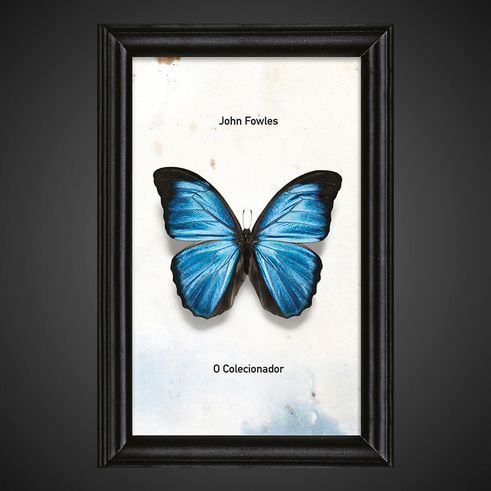

O COLECIONADOR é a história de Frederick Clegg, um homem solitário, de origem humilde, menosprezado por uma sociedade esnobe, que encontra o grande amor de sua vida. Tudo o que ele deseja é passar um tempo a sós com ela, demonstrar seus nobres sentimentos e deixar claro que eles nasceram um para o outro.
O COLECIONADOR também é a história de Miranda Gray, uma jovem estudante de artes sequestrada por um maníaco que acha que pode obrigá-la a se apaixonar por ele. Tudo o que ela deseja é escapar do cativeiro, e vai usar de toda sua inteligência para sobreviver ao inferno em que sua vida se transformou.
O romance é narrado por dois personagens antagônicos: o sequestrador e sua vítima. Frederick e Miranda. Todos temos um pouco dos dois dentro de nós, concluímos ao final de suas páginas — quem consegue se desgrudar delas?